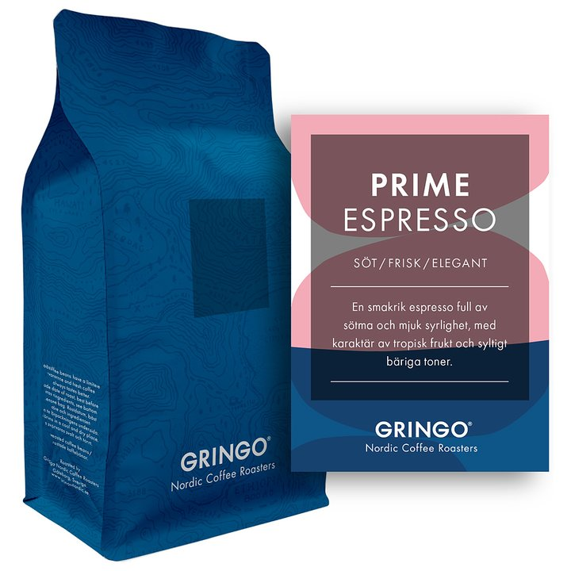

life is too short for bad coffee
At Kaffeboden we have a wide selection of handpicked beans.
All of our Gringo bags are filled with 500g of top quality beans.
Basic Brew
SOFT | ROUNDED | BALANCED
$24.99

Basic Espresso
SOFT | ROUNDED | BALANCED
$24.99
Prime Brew
SWEET | FRESH | REFINED
$39.99

Prime Espresso
SWEET | FRESH | REFINED
$39.99

Radical Brew
SPICY | HEAVY | RICH
$29.99

Radical Espresso
SPICY | HEAVY | RICH
$29.99
Africana Guji Organic
FLAVORFUL | FRUITY | SWEET
$19.99

Africana Suke Organic
FLAVORFUL | FRESH | DELICIOUS
$19.99
C. American San José Bourbon
RICH | CHOCOLATY | SWEET
$24.99
South American Fatima Organic
RICH | NUTTY | MILD
$24.99
South American La Tierra
BALANCED | FRUITY | RICH
$24.99

Indonesian Gayo Mountain
SPICY | HERBY | MUSTY
$34.99
Indonesian Raja Toba Garden
SPICY | HERBY | MUSTY
$34.99
Christmas Brew
MUSTY | RICH | FLAVORFUL
$24.99
The Outsider
ORGANIC | CHOCOLATY | BITTER
$39.99